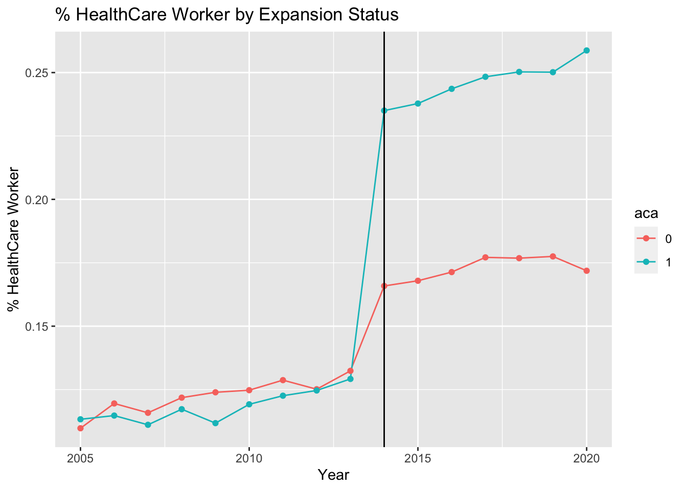

Synthetic Analysis
In this section, I create synthetic data. The linear relationships discussed in this section are not empirical. Instead, they are based on economic intuition. Building econometric models around synthetic data are essential because it reduces intentional/non-intensional p-hacking by setting up a pipeline for the data before actual data is explored. Since the model is pre-built, all the researchers must set aca_data equal to the real clean dataset, and the variables’ names should match (see bullet points below).
year: (numeric) the year observation was recorded. [i.e. 2012]FIPS: (numeric) the FIPS code corresponding to U.S. state [i.e. 34]sick_days: (numeric) the number of sick days the given individual had in year tunins: (numeric) a binary variable equal to one if an individual does not have health insurancetrips: (numeric) number of trips to the doctor for a given individual in the year thcWorker: (numeric) binary variable equal to one if the given individual works in healthcare
Creating Fake Data
Creating synthetic data requires the selection of many hyper-parameters. For this process, a sample of 300,000 is selected, an adequate sample size to represent the united states. Next, the distribution of the variables is selected. It is assumed in this analysis that the data is pooled-cross-sectional and was the collection process is stratified random sampling. For this reason, year and FIPS have a uniform distribution. years is limited to a range of 2005 to 2020 because the ACA expansion did not start until 2014. Next the base values (\(\alpha\)) are selected. sick_days is a truncated normal distribution (\(\mu\) = 7, \(\sigma\) = 5) with a lower bound at 0. This lower bound is selected because negative values are impossible. unins (\(\phi = .5\)) and hsWorker (\(\phi = .1\)) both have Bernoulli distributions because they are binary. There is little intuitive information in the posterior of unins, so the probability parameter is .5, whereas a bit more is known about hsWorker. Finally, trips is given a beta distribution because it is likely skewed to the right. It is rescaled (using rescale()) between -2 and 30. I allowed negative numbers here to avoid truncation errors when I add in my linear relationships. [side note I account for truncation here and not with sick_days just for my learning]
Next, I derive aca and post. As seen in equation 1, aca is an indicator variable equal to one if the state is enrolled in the ACA Medicaid Expansion (this is time-invariant). post is another indicator variable equal to 1 if the observation was recorded after 2014.
In addition to these variable state (\(\sigma_s\)) and year (\(\gamma\)) fixed effects are made. To create state effects, the FIPS column is spread into a one-hot vector for each observation and parsed as a matrix. Then the dot product is found between the one-hot matrix (i x state) and a coefficient vector (State x 1). This is redone for each dependent variable in the analysis. The year fixed effects are made by creating a t variable equal to year minus 2005. Times series drift is created by multiplying t by the coefficient selected for each dependent variable. In the “Adding Variable Relationship” section, you will see how these fixed effects add to the dependent variable.
let S be the set of states the expanded medicaid, and T be a set of years after 2016
\[
ACA(State) =
\begin{cases}
1, \space state \in S \\
0, \space state \notin S
\end{cases}
\tag{1}\]
\[
Post(Year) =
\begin{cases}
1, \space Year \in T \\
0, \space Year \notin T
\end{cases}
\tag{2}\]
\[
Y_i = \beta_0 + \beta_1 Post_t + \beta_2 ACA_s + \beta_3 Post_t*ACA_s + \sigma_s + \gamma t + \epsilon_{i,t}
\tag{3}\]
Adding Variable Relationships
Sick Days
\[ SickDays_i = \alpha_1 + .01(Post_t) + .05 (ACA_s) -.2 (Post_t*ACA_s) + \sigma_s + .03 (t) + \epsilon_{i,t} \]
Uninsurance
\[ Uninsurance_i = \alpha_2 -.1(Post_t) + .0005 (ACA_s) -.3(Post_t*ACA_s) + \sigma_s -.03 (t) + \epsilon_{i,t} \]
Trips to Doctor
\[ DoctorTrips_i = \alpha_3 -2(Post_t) + .001(ACA_s) +3(Post_t*ACA_s) + \sigma_s + .4 (t) + \epsilon_{i,t} \]
Health Care Worker
\[ HealthCareWorker_i = \alpha_4 -.01(Post_t) + .09 (ACA_s) -.05(Post_t*ACA_s) + \sigma_s + .002 (t) + \epsilon_{i,t} \]
Exploratory Anlaysis
In this section, the variable relationships are explored. Since this is synthetic data, the authenticity of the intuitive relationship is in question. However, when real data is used, these graphs can be interpreted. For each variable, a time plot differentiated by treatment group is examined. This plot is essential when analyzing parallel trends for difference-and-difference analysis.
Sick Days
The distribution of sick_days is skewed right with a mean of 9 days per year.
The data below shows that both groups are gradually drifting upwards. The treatment group experienced a sharp drop in 2014 and then resumed its slow upwards drift.

Uninsurance
The treatment and control uninsurance rates are relatively similar in the pretreatment period. After the treatment, they both experience a radical decrease in uninsurance rates. However, the treatment group decreased more.
Trips to Doctor
The distribution of doctor trips has a larger cut off at 0. This is commonly seen in truncated data.

From the trends seen below, the treatment and control groups are similar in the pretreatment period until a significant increase in the treatment group after the treatment period. There also seems to be a significant positive drift in both groups
Health Care Worker
The percentage of healthcare workers is similar between the treatment and control groups during the pretreatment period. After the treatment, there is a significant increase in the number of healthcare workers in the treatment group.

Regression Analysis
| Sick Days | Uninsurance | Doctor Trips | HealthCare Worker | |
|---|---|---|---|---|
| (Intercept) | 8.085*** | 0.501*** | 8.007*** | 0.123*** |
| (0.016) | (0.001) | (0.026) | (0.001) | |
| Post | 0.025 | −0.396*** | 3.847*** | 0.049*** |
| (0.025) | (0.002) | (0.040) | (0.002) | |
| ACA | −0.376*** | −0.002 | 0.190*** | −0.005** |
| (0.023) | (0.002) | (0.036) | (0.002) | |
| Post:ACA | −0.243*** | −0.083*** | 2.242*** | 0.077*** |
| (0.034) | (0.003) | (0.055) | (0.003) | |
| Num.Obs. | 278083 | 278083 | 278083 | 278083 |
| R2 | 0.003 | 0.227 | 0.117 | 0.022 |
| R2 Adj. | 0.003 | 0.227 | 0.117 | 0.022 |
| RMSE | 4.47 | 0.41 | 7.18 | 0.34 |
| + p < 0.1, * p < 0.05, ** p < 0.01, *** p < 0.001 |
| Sick Days | Uninsurance | Doctor Trips | HealthCare Worker | |
|---|---|---|---|---|
| Post:ACA | −0.239*** | −0.083*** | 2.245*** | 0.077*** |
| (0.031) | (0.003) | (0.086) | (0.002) | |
| Num.Obs. | 278083 | 278083 | 278083 | 278083 |
| R2 | 0.058 | 0.228 | 0.173 | 0.026 |
| R2 Adj. | 0.058 | 0.227 | 0.173 | 0.025 |
| RMSE | 4.34 | 0.41 | 6.95 | 0.34 |
| + p < 0.1, * p < 0.05, ** p < 0.01, *** p < 0.001 |